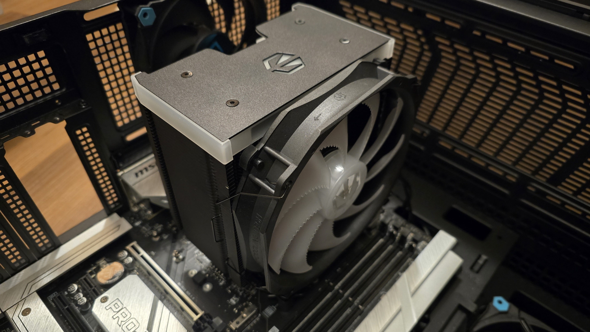
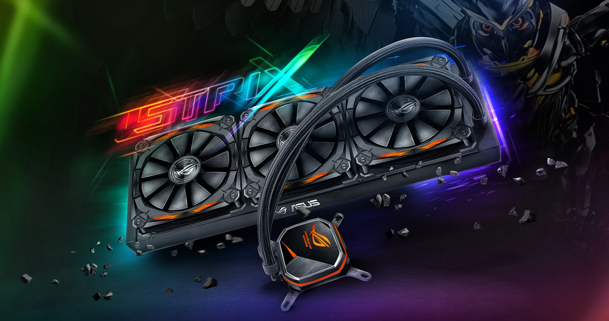
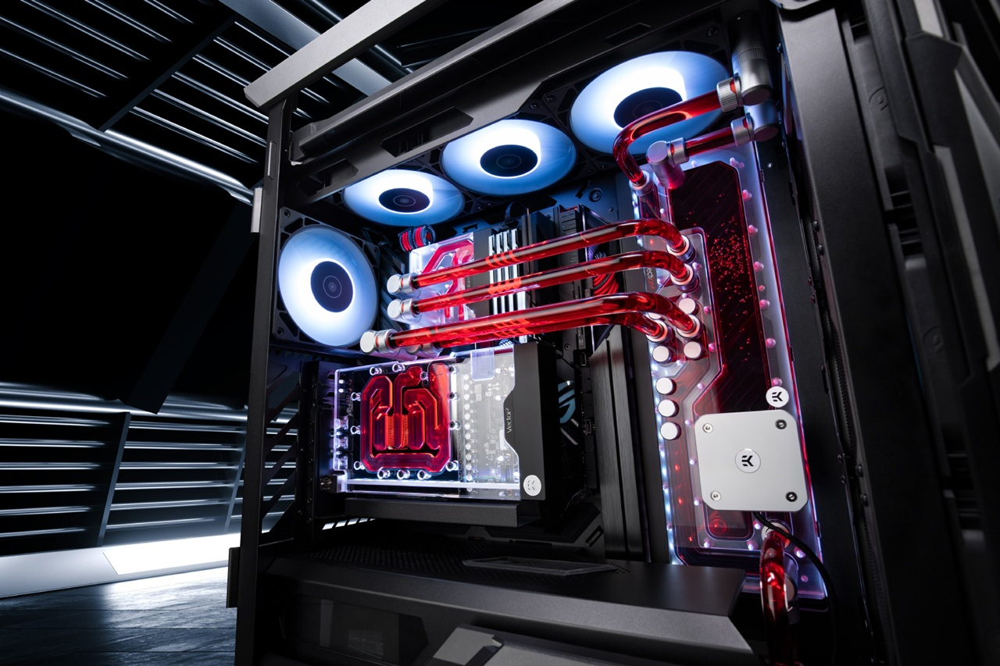
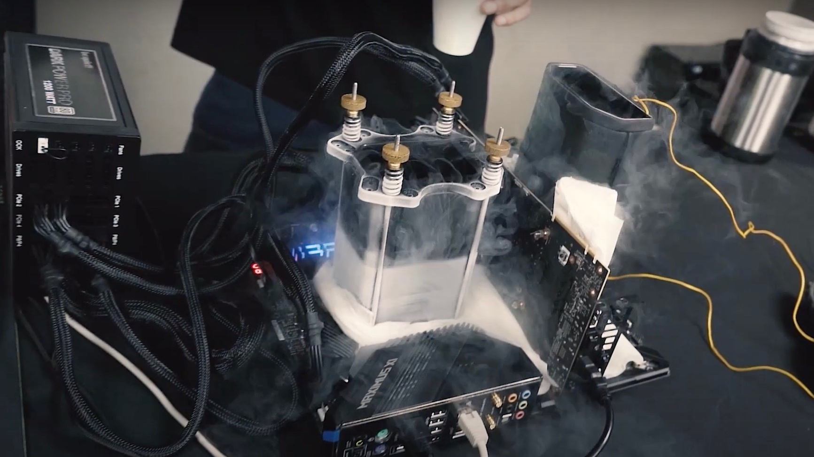

La CPU produce molto calore. Se non viene dissipato, le prestazioni crollano per evitare danni (Thermal Throttling).

È il metodo più comune, affidabile ed economico..
È una soluzione a liquido pre-assemblata e sigillata (chiusa), che non richiede manutenzione (All-in-One).


È il sistema più efficace, ma anche il più costoso, complesso e ad alto mantenimento.
Queste soluzioni sono utilizzate solo da overclocker professionisti per sessioni di test brevi e non sono adatte all'uso quotidiano.
